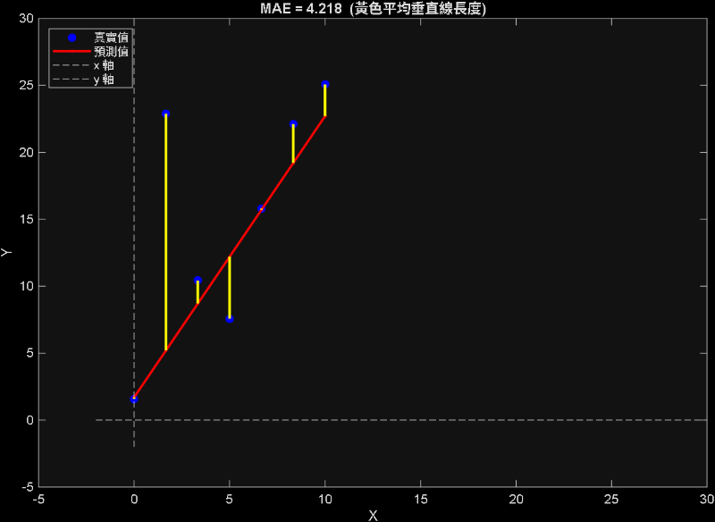
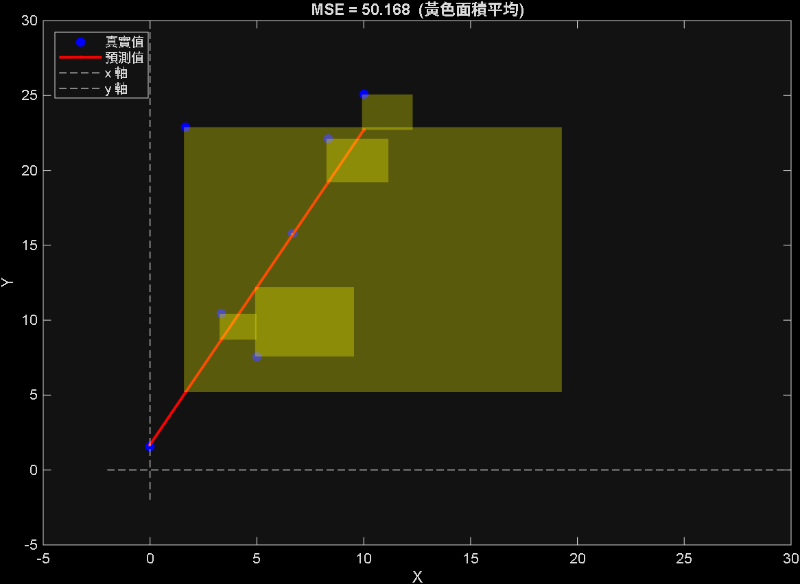
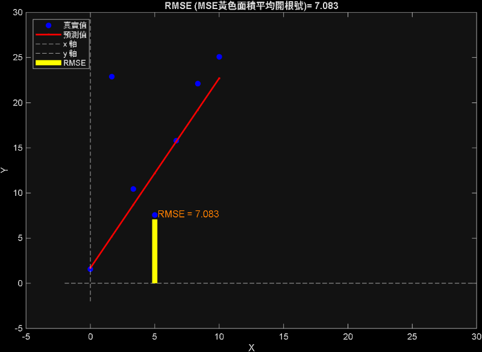
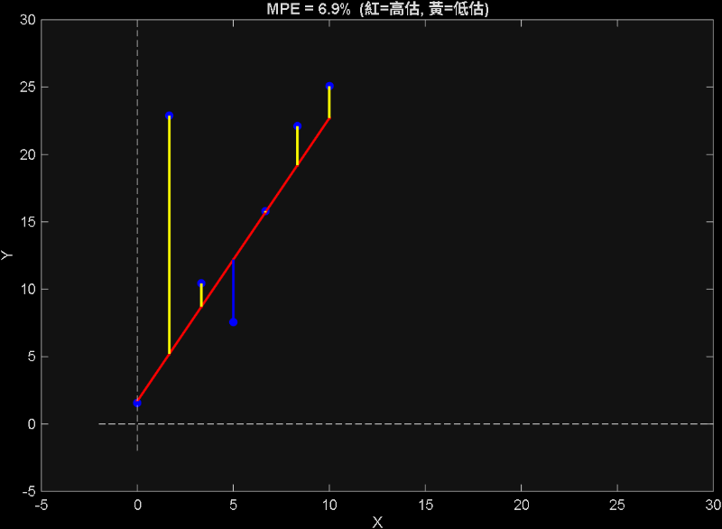
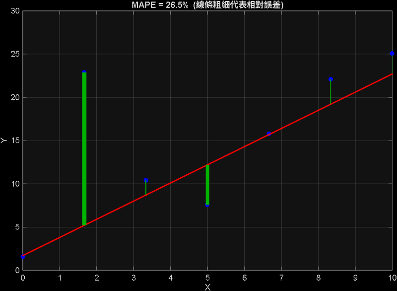
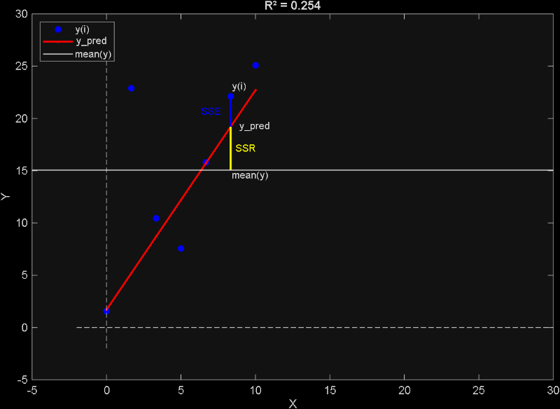

How to do data analysis <<
Previous Next >> cameraSistyem
regression error index
1.error index
- MAE 平均絕對誤差 :對誤差取絕對值後(直線距離)相加，再平均。

- MSE 均方誤差 :對誤差平方(正方形面積)相加後再平均。

- RMSE 均方根誤差 :對誤差平方(正方形面積)相加後，平均再開根號。

- MPE 平均百分比誤差 :(實際值-預測值)/實際值*100%後取平均

- MAPE 平均絕對百分比誤差 :abs((實際值-預測值)/實際值*100%後取平均

2.goodness of fit
| 符號 |
全名 |
公式 |
意思 |
| SST |
Total Sum of Squares |
sum((y - mean(y)).^2) |
y 的總變異 |
| SSR |
Regression Sum of Squares |
sum((y_pred - mean(y)).^2) |
模型解釋到的變異 |
| SSE |
Error Sum of Squares |
sum((y - y_pred).^2) |
模型沒解釋到的變異（殘差） |
*mean(y)為原始數據取平均，y為某一點的原始數據,y_pred為某一點預測方程式的值

////////////////////////////
數值多少算好
MAE RMSE 數值會差不多嗎?
情況一：誤差都差不多大 err = [1, 1, 1, 1, 1] MAE = 1.0 RMSE = 1.0 ← 幾乎一樣
情況二：有一個很大的離群誤差 err = [1, 1, 1, 1, 10] MAE = 2.8 RMSE = 4.6 ← 差很多，因為 10² = 100 被放大了
How to do data analysis <<
Previous Next >> cameraSistyem